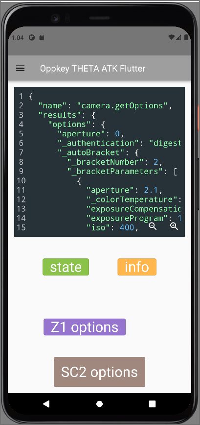
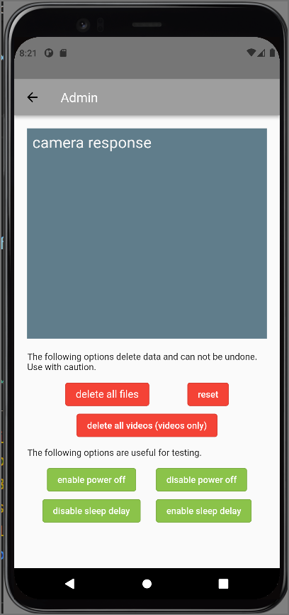
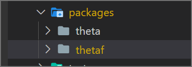

thetaf
Flutter widgets for RICOH THETA camera application prototyping. Package is intended for API testing and rapid prototyping. This is not suitable for production applications.
Features
- API request and response for RICOH THETA WebAPI v2.1
- Widgets can be used on iOS, Android, and desktop. Web is not supported.


Getting started
- RICOH THETA must be connected to development workstation using Wi-Fi with the camera as the access point
- the theta package must be installed

Usage
Start with ThetaWindow as root widget under Scaffold
import 'package:thetaf/thetaf.dart';
...
return MaterialApp(
home: Scaffold(
body: ThetaWindow(
child: Column(
Put thetaf widgets as children of ThetaWindow
Additional information
Libraries
- thetaf
- Flutter library for RICOH THETA cameras requires use of the theta package